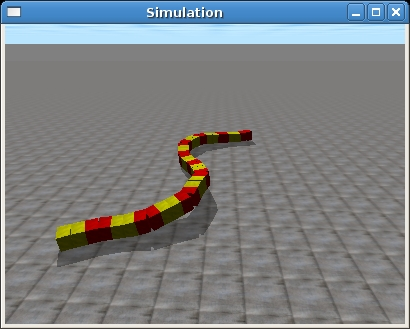
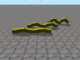
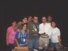
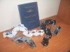
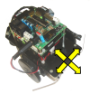
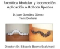
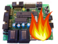

| 29/Dic/2008 | Publicado Cube Simultator 1.1. Esta versión funciona en Debian/Lenny y para ODE 0.9. (Más información) |
| 26/Dic/2008 |
 Publicado Cube Simultator 1.0, herramientas para la simulación de la locomoción de robots ápodos (Más información) |
| 20/Dic/2008 |
 Publicados vídeos de las simulaciones de la locomoción de robots ápodos de 32 y 8 módulos, de los grupo cabeceo-cabeceo y cabeceo-viraje, así como la simulación de las configuraciones mínimas (Más información) |
| 04/Dic/2008 | Publicada la bitácora de la Lectura de la tesis de Juan González. (Más información) |
| 01/Dic/2008 |
 Publicada las transparencias y Bitácora de la conferencia Robótica Modular Libre que se impartió en el VIII Simposium Internacional de Computación en Ciudad Obregón, Sonora, México. (Más información) |
| 27/Nov/2008 |
 Publicada la tesis doctoral Robótica Modular y Locomoción: Aplicación a Robots Ápodos, leida el 21-Nov-2008 por Juan González. (Más información) |
| 12/Nov/2008 | Publicada la Bitácora de la Campus Party Iberoamérica. (Más información) |
| 01/Nov/2008 | Versión 1.0.1 del Skybot-test. Disponible la versión 1.0.1 del programa Skybot-test. Soluciona algunos errores encontrados. (Más Información) |
| 28/Oct/2008 | Taller de robótica básica. Campus Party Iberoamérica. Del 28/Oct al 01/Nov en El Salvador. Se construirán 22 robots, representando a los 22 paises de Iberoamérica. Juntos formarán el Robot de la cumbre. (Más información) |
| 27/Oct/2008 |  Programa Skybot-test 1.0. Liberada la versión 1.0 del programa Skybot-test que permite controlar el robot Skybot así como visualizar el estado de todos sus sensores. (Más Información) (Blog) |
| 18/Oct/2008 |  Seminario previo a la lectura de tesis. El pasado 8 de octubre se impartió el seminario previo a la defensa de la tesis "Robótica Modular y Locomoción: Aplicación a robots ápodos" en la Escuela Politécnica Superior de la Universidad Autónoma de Madrid. (Más Información) (Blog) |
| 30/Sep/2008 |  Publicada versión 1.0 de Pyburn, una aplicación gráfica para la grabación a bajo nivel de la Skypic usando otra Skypic. (Más información) |
| 23/Sep/2008 | Publicada versión 3 del servidor PICP para la grabación de microcontroladores PICs |
| 17/Ago/2008 | Publicada la bitácora de la demostración de robots modulares que se dió en uno de los cursos de verano de la Universidad Autónoma de Madrid en Miraflores (Más información) (Vídeo) |
| 12/Ago/2008 | Publicada la bitácora de la demostración de robots modulares que se dió en uno de los cursos de verano de El Escorial en Madrid ( Más información) (Blog) |
| 08/Ago/2008 |
|
| 29/Jul/2008 |
|
| 01/Jul/2008 | Taller de iniciación a la Robótica en la Universidad Autónoma de Madrid. ( Más información) |
| 18/Jun/2008 | Control de un Skybot con la wii-board. (Vídeo) (Blog) ( Más información) |
| 17/Jun/2008 | Página del Skybot migrada al wiki. Revisada y ampliada |
| 15/Jun/2008 |
|
| 13/Jun/2008 | Este wiki pasa a ser la página principal de Iearobotics. |
| 11/Jun/2008 | Comenzado artículo sobre FlatBot, una plataforma móvil plana que permite convertir tu ordenador portátil en un robot. |
| 10/Jun/2008 | Tarri-wheel, constrúyete tu propio volante inalámbrico usando el mando de la wii y una tarrina de CDs |
| 7/Jun/2008 | Comenzado artículo Wii Board: Información sobre la Wii Board. Queremos usarla para mover robots :-) |
| 1/Jun/2008 | Comenzada la documentación del Taller FlatBot para la Campus Party 2008. Convierte tu PC en un Robot. |
| 28/Mayo/2008 | Comenzado artículo Wiilson:Control de un Skybot con el mando de la wii y PWM. Proyecto de la asignatura de Robótica Autónoma de la Escuela Politécnica Superior de la UAM |
| 23/Mayo/2008 | Star Destroyer: Destructor Imperial de la película Star Wars controlado con un wiimote. Proyecto de la asignatura de Robótica Autónoma de la Escuela Politécnica Superior de la UAM |